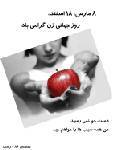

|
|
|
Browsing
Contact Us |
Campaigners |
Face to Face |
Tribune |
Interview |
News |
On the Web |
One Million |
Report
Farsi | Français | German | Italian | Spanish | العربية Also in this section
|
 Campaign Members in Rasht Commemorate International Women’s DayMonday 31 March 2008 Change for Equality: Women’s rights activists in Rasht commemorated International Women’s Day, March 8th, by distributing brochures on the history of International Women’s Day, which included information about the One Million Signatures Campaign. The brochures also provided a background on the program for "Social Safety," and the "Family Protection Act," both government programs to which women’s rights activists have consistently objected. These low-literacy and easy to read brochures were distributed to women throughout the city, with the intent of informing them about the aims of the Campaign and the history of International Women’s Day, a celebration which is not acknowledged by officials or covered by the regular media. The reaction of those receiving these brochures was positive and encouraging. A celebration on the occasion of March 8th was also held in the private home of one of Rasht’s women’s rights activists. The celebration included the showing of several short feminist films and a small book fair. The celebration included a short history of International Women’s Day, an examination of the women’s movement and its achievements over the past year, and a review of the pressures inflicted upon women’s rights activists since March 8th 2007. The main part of the program included an analysis of the "Family Protection Act." This analysis which found the proposed legislation to be yet another assault on women’s rights was followed by discussions. These discussions included the identification of strategies designed to effectively share information with the public about the negative aspects of this legislation and its negative impact on the lives of women and families. Strategies for effectively objecting to this proposed legislation and its provisions were also discussed. The celebration came with several feminist anthems. You can read more about this event and the activities of the Campaign in Rasht on their site. Translated by: Sussan Tahmasebi |